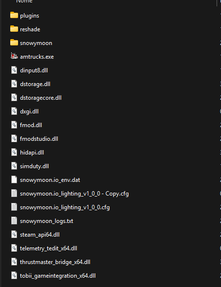
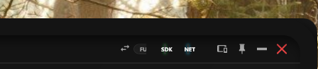
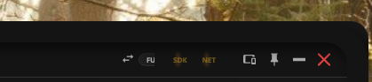

First Run Guide
Install SimDuty correctly, enable telemetry, and validate your first operational session.
Overview
Use this guide to prepare your ATS/ETS2 environment for a reliable first run.
SimDuty runs in the background and captures telemetry directly from the game engine without manual data entry.
Platform scope: this page is the primary Windows-first flow. If you use Linux/Proton, follow the dedicated Linux Setup (Proton) guide.
Install plugin DLLs in the correct win_x64/plugins folder
Launch sequence: SimDuty first, then ATS/ETS2, then enter cabin
Validate SDK/NET status before starting real trips
Approve plugin prompts on first game launch
Pre-check antivirus exceptions to avoid DLL false positives
Step 1: Download and extract the app
- Join our official Discord: discord.gg/NATM3BEzbe.
- Open the
#downloadschannel and get the latest SimDuty release package. - Extract the `.zip` file to a fixed folder on your computer.
Step 2: Install telemetry files
- Open the `dll` folder inside your extracted SimDuty files.
- Copy `simduty.dll` and `scs-telemetry.dll`.
- Paste both files into your game `plugins` folder.
- If the `plugins` folder does not exist, create it manually.
- If the game asks permission for plugins on first launch, allow it.
Path reference:
- ATS:
\American Truck Simulator\bin\win_x64\plugins - ETS2:
\Euro Truck Simulator 2\bin\win_x64\plugins
Requirement: use 64-bit game launch options.

Step 3: Launch SimDuty and validate connectivity
- Open SimDuty before starting the game.
- Launch ATS or ETS2 in 64-bit mode.
- Enter the truck cabin and drive briefly to initialize telemetry data flow.


- SDK OK: Telemetry connected.
- SDK FAIL: Telemetry unavailable (check
scs-telemetry.dll). - NET OK: SimDuty channel connected.
- NET FAIL: SimDuty channel unavailable (check
simduty.dll).
Signal reference:
- SDK OK: game telemetry is available and updating.
- SDK FAIL: check
scs-telemetry.dll, plugin path, and game startup mode. - NET OK: SimDuty communication channel is active.
- NET FAIL: check
simduty.dlland restart sequence.
Common wrong launch order:
- Wrong: game first -> SimDuty later -> no cabin initialization check.
- Correct: SimDuty first -> game second (x64) -> enter cabin -> move briefly -> verify SDK/NET.
Linux (Proton) path
If you are running ATS/ETS2 on Linux, use the dedicated Linux guide for Proton prefix setup, DLL overrides, and .NET runtime steps.
Validation checkpoint
- Windows 10/11 x64
- ATS/ETS2 installed
- Game fatigue disabled
- SimDuty opened before game launch
- SDK and NET in OK state after entering the cabin
Quick support
Symptom: status does not change or SDK/NET lights stay yellow.
Likely cause: wrong DLL folder, antivirus block, or plugin approval missing.
- SDK FAIL: verify
scs-telemetry.dllin\bin\win_x64\plugins. - NET FAIL: verify
simduty.dllin\bin\win_x64\plugins. - Close both game and SimDuty.
- Copy both DLL files again to the target plugins folder.
- Check whether antivirus or Windows blocked the DLL files.
- If the app does not launch, install .NET Desktop Runtime (x64) and VC++ 2015-2022 (x64), then restart Windows.
- If you are on Linux/Proton, follow Linux Setup (Proton) for prefix and runtime configuration.
- If modules appear missing after first startup, confirm App Edition in Setup Guide (Lite vs Full).
- If tabs are not visible on small layouts, confirm display mode and check the
Moremenu.